shimoda
On the morning of May 28th 2020, we arrived near the Izu peninsula. We left Shima Yacht Harbour yesterday for an overnight 126 nm passage to Shimoda. We'd planned to pass south of the Mikomotoshima Lighthouse, an island 5.9 nm away from the port entrance. The forecast showed little to no wind for the area, but we got 30+ knots on the nose, funneling out of Sagami Bay. We tightened the sheets and pushed on. In this kind of weather, the short trip there was wet and cold, it felt unending. We saw a large freighter moving between the land and a set of offshore rocks to the north. Had we passed there, we would have avoided beating into this wind.
We arrived at the breakwater, and inched inside the beautiful, sheltered port of Shimoda. We found a spot on a pontoon, at the opening of the Inouzawa river. Our spot in Shimoda offered an amazing view of the port, with many fishing boats lining its sides. Two iconic mountains stood as a backdrop to this small city. A bust of Commodore Matthew C. Perry sat a few meters away. Perry and his collection of modern warships sailed into Shimoda port in 1854, demanding that the Japanese end its 200-year-old policy of isolation and begin trade with the United States. In town, we found many momuments commemorating the event, like a full-sized replica of his black warship, or Kuro fune. We also found strange Perry-themed oddities, like dolls and cookies bearing his likeness.
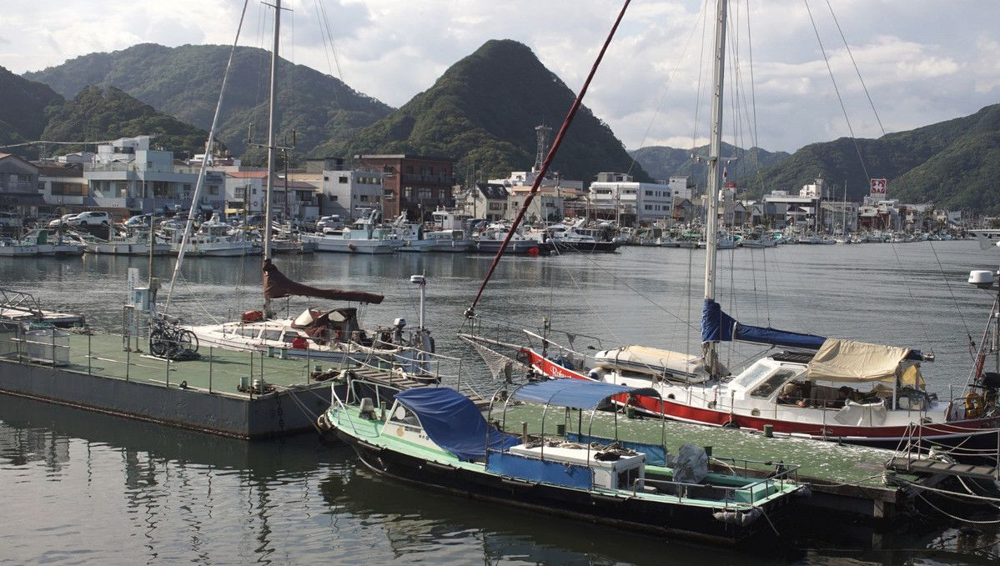Our friends from Robusta landed on our pontoon just a few hours later, we knew they were coming but did not know when. The last time we had seen them was in Whangarei, New Zealand in 2018. We explored the area together, all the while, preparing for our dreaded leap across the North Pacific Ocean.
We didn't stay on the pontoon for long because the owner kept telling us that we couldn't stay for our desired period because others boats were coming. We never really understood this, because our friend Hiro had called prior to us leaving, and had asked if we could stay one week—he had agreed.
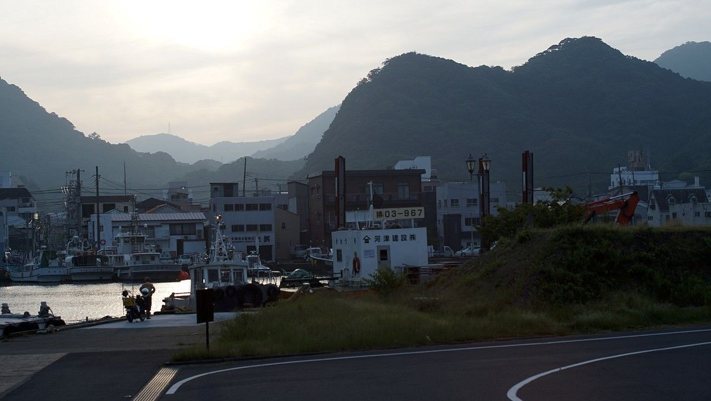We used our time there to fill up on water, and to dive under Pino to clear some hondawara (sargassum seaweed) from our prop. We caught the seaweed on the trip up from Minamiise. In the spring, the seaweed leaves the ocean floor, floats just below the surface following the kuroshio current runs along the east coast of Japan. It is difficult to avoid. Our friends had to dive many times under their boat when sailing up from Okinawa. The seaweed, thankfully, did not restrict our movement but we went to clear it anyway. (The water was quite cold). Once we left the pontoon, we never saw any boat dock there after us.
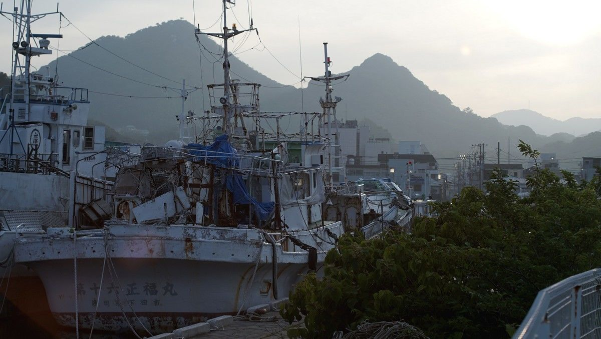We moved Pino to the main fishing harbour area, rafting to Robusta. But we had to leave shortly after because some local fishing boats needed the space. The fishing industry owns much of the water and ports in Japan, when they ask you to move, you move.
Anja looked over a map of the area, and found a spot in Takegahama, a small protected space with a dock. We had walked by it often, but never saw boats there. The entrance was really narrow, but the water was deep, and there was room for both of our boats. We could find no sign restricting access, not even one in Japanese (we looked for it real hard).
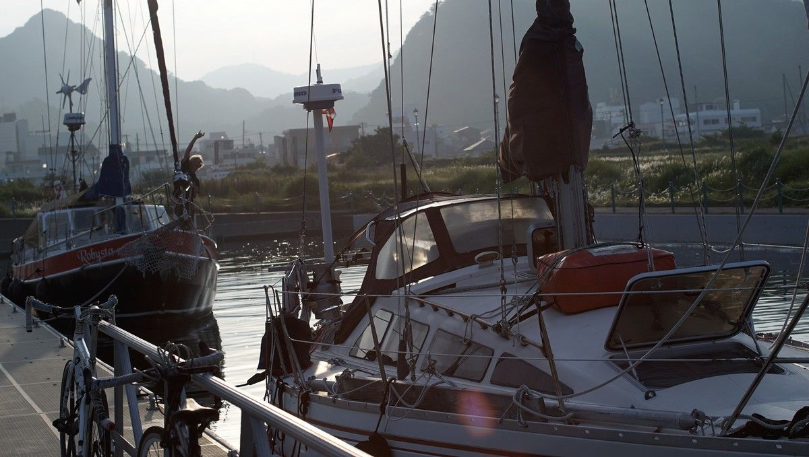We dubbed this place "the parking lot", and stayed there for about a week. We learned that there was once a shipyard here, and they'd wanted to build a hotel, but it never happened and the place remained a mostly vacant lot. Once a year, there is an event here called Shimoda Rendez-Vous, but because of the pandemic it was cancelled.
One evening we saw a super yacht dock nearby. Despite speaking no Japanese, Anja walked over and asked the owner if they knew who owned "the parking lot". They told her that it belonged to someone in Tokyo, and that he knew we were there, but that he was okay with it. No one ever came to wave us away, I expected it but it never happened. In Japan, they don't generally mind telling you what you can, and cannot do.
We are glad we were allowed to stay there, but sometimes we wonder how much was lost in translation...
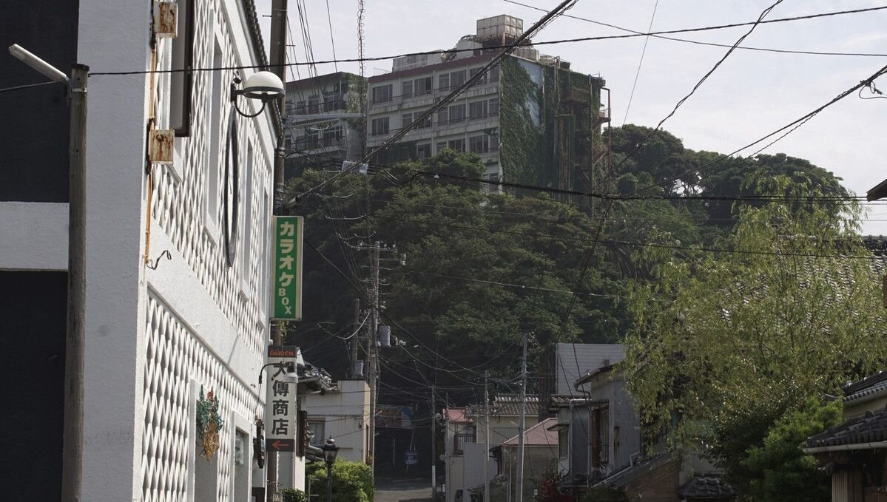The town had many shops, making it ideal to gather provisions. We'd already started stocking up while in Minamiise, but it was hard to carry more than a backpack-full of items at a time. The shop was a 30-minute, hilly bike ride away. In Shimoda, stores were conveniently close, we could walk the food to the boat. We liked going to Maxvalu Express, and the larger Maxvalu in Izushimoda. For fancier, specialty foods, Food Store Aoki in Hirooka was fantastic.
Shimoda is a beautiful, small city, a good balance of nature and human structures. We explored the area everyday, taking walks along the water, or up the numerous mountains surrounding the port. We visited Shiroyama Park, up on a hill bordering the ocean. The park had many observatories from which to see the city and ocean, and the paths between look out points were full of hortensias.
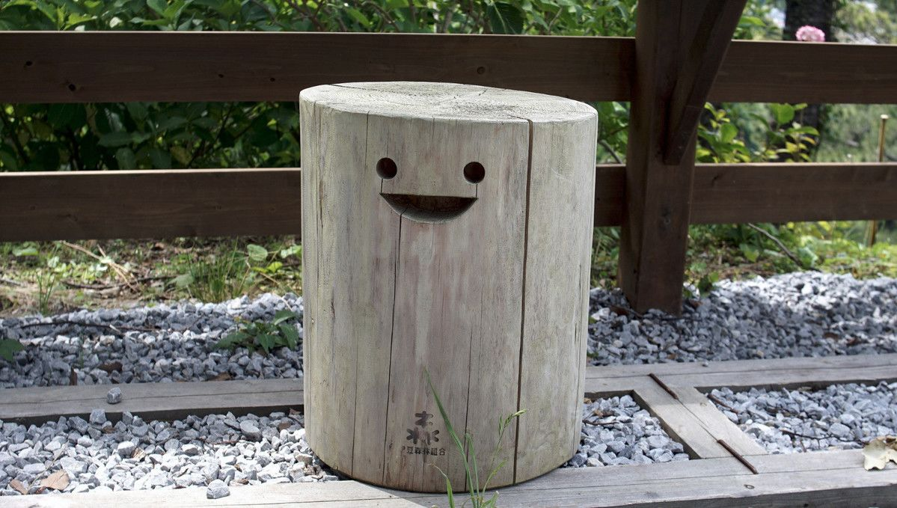In the Shinto universe, every piece of dust, every plant, vegetable or inanimate thing is believed to have life, a spirit. While in Shiroyama park, the stump stools smiled at us as we walked past, and we, smiled back.
Mountains and rivers, grasses and flowers, can all become Buddhas.
If you take care of things, the Japanese say, they will take care of you. We certainly feel that way with our things, and with Pino.
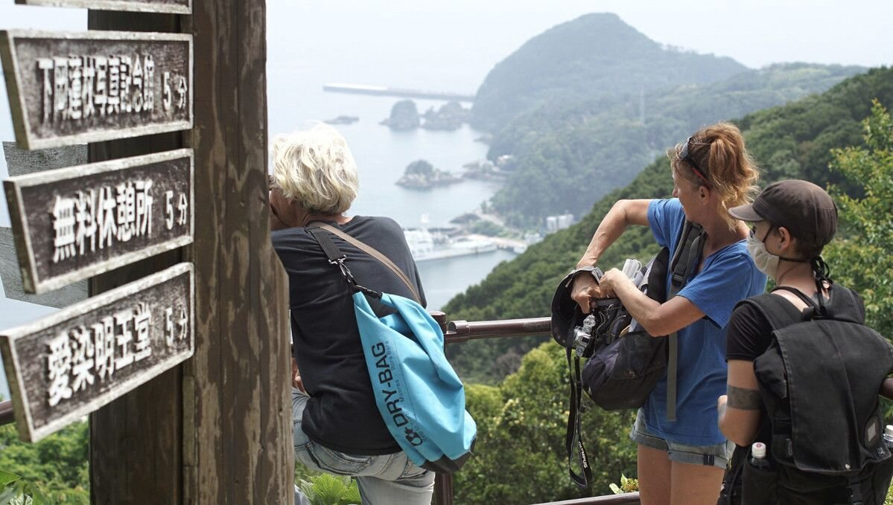One morning, along with Thomas and Anja, we took the ropeway up to the Mount Nesugatayama observatory.
We stopped by Aizen-myo-odo temple, but most importantly, we climbed up here to see the city of Shimoda from a giant's perspective. We could clearly see the breakwater, where'd we come in just a few days ago. From up here, it was easy to imagine Commodore Perry's black ship, with its giant smokestacks entering the harbour. The event has been commodified, made palatable for tourists, even if in reality the Japanese were not glad to see that ship at their door.
While on the ropeway, we spotted a decrepit building in the forest, bordered with trees.
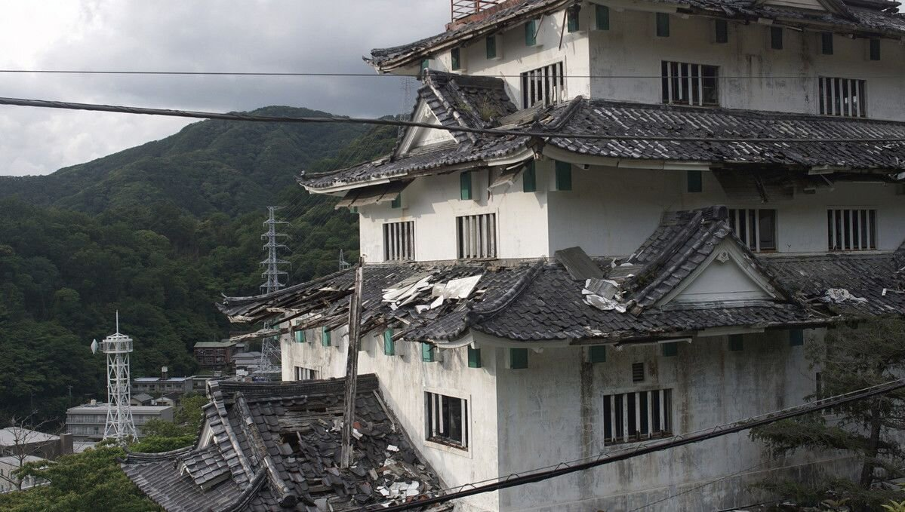It is rare to see buildings that are falling apart in Japan, we found such a building hidden on the base of Mount Nesugatayama. It had tiles missing from the roof, with green growing its walls. It was difficult to find information about this place. A few days before we left, friends from Tokyo came to visit and we cycled there together.
We found many treasures inside (worry not, we left the space as it was).
One of our bikes got a flat on the ride there, luckily Shimoda Station sells tubes in a vending machine (!!!). This is not common in Japan, but in this particular instance it was very welcome, because we had no extra tubes. Japanese kombini are a godsend, a place where you can repair a bike, get a change of shirt, buy food, pay for your taxes, receive packages, print or copy documents etc.
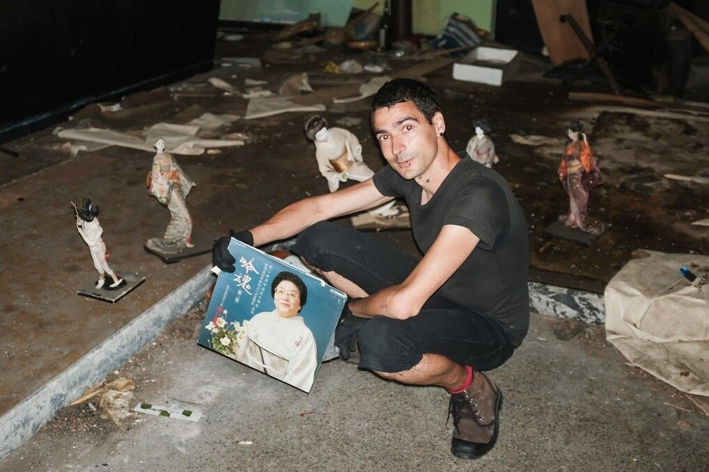We would watch the weather everyday. If we hoped to make any progress sailing away from Japan, we needed a few days of consistent wind from a favourable direction. The port of Shimoda was a strategic point of departure, as it was as far north, and east, as we could go. Many ports north were still closed because of the coronavirus pandemic, and due to their proximity to Tokyo.
We finally found our window, and the day before leaving we took the train to Shizuoka to check out with Immigration. There was a Customs office in Shimoda, but the issue was that it was not open everyday (we found out the hard way). We thought we could train back to Shimoda and check out there, but when we told Immigration this, they told us it was closed today. We were lucky, Immigration workers contacted another customs office and helped us check out from their office, we finished the process by email. Anja and Thomas were not so lucky, they had to stop in Numazu to check out with customs, and added a few hours to their trip (we were both leaving the next day).
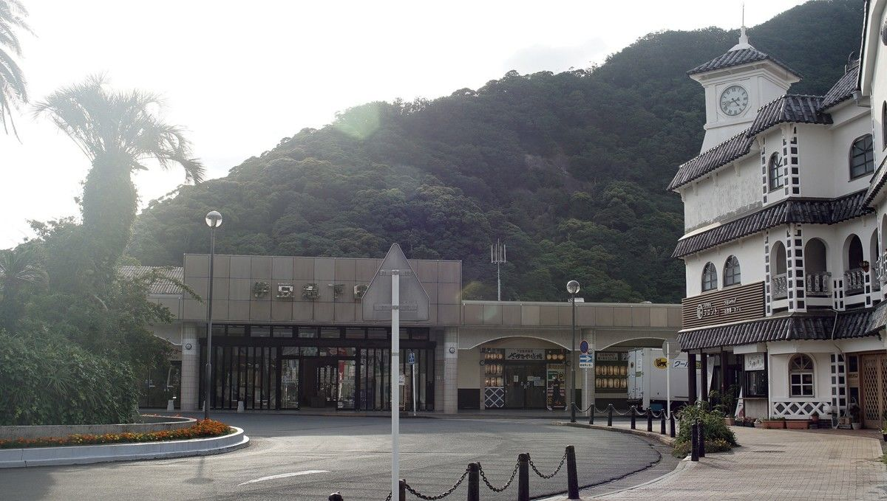We left Shimoda 2 hours after Anja and Thomas, and returned 2 hours before them. We used that time to stock up on last minute groceries. We carried food in bags in the dark, hanging them all on our bikes. We were carrying so much that we could not ride our bikes without falling over. We spent the evening fixing issues with our Iridium satellite phone, and when Anja and Thomas we returned we had one last beer together on the docks, in the dark, with our friend Shuhei.
On the morning of June 9th 2020, we left the port of Shimoda to sail east, toward British Columbia, Canada. The distance is 4045 nm (7491.34 km), and will take anywhere from 40-50 days. Wish us luck.
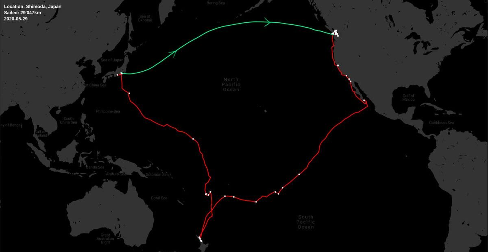NOTE: we arrived safely in Victoria, BC on July 28th 2020. We published a book on our 51-day transit called busy doing nothing.